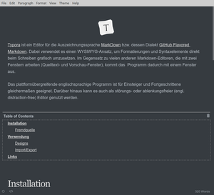

Typora
Dieser Artikel wurde für die folgenden Ubuntu-Versionen getestet:
Ubuntu 16.04 Xenial Xerus
Zum Verständnis dieses Artikels sind folgende Seiten hilfreich:
Typora  ist ein Editor für die vereinfachte Auszeichnungssprache MarkDown bzw. dessen Dialekt GitHub Flavored Markdown . Dabei verwendet es einen WYSIWYG-Ansatz, um Formatierungen und Syntaxelemente direkt beim Schreiben grafisch umzusetzen. Im Gegensatz zu vielen anderen Markdown-Editoren, die mit zwei Fenstern arbeiten (Quelltext- und Vorschau-Fenster), kommt das Programm dadurch mit einem Fenster aus.
ist ein Editor für die vereinfachte Auszeichnungssprache MarkDown bzw. dessen Dialekt GitHub Flavored Markdown . Dabei verwendet es einen WYSIWYG-Ansatz, um Formatierungen und Syntaxelemente direkt beim Schreiben grafisch umzusetzen. Im Gegensatz zu vielen anderen Markdown-Editoren, die mit zwei Fenstern arbeiten (Quelltext- und Vorschau-Fenster), kommt das Programm dadurch mit einem Fenster aus.
Das plattformübergreifende englischsprachige Programm ist für Einsteiger und Fortgeschrittene gleichermaßen geeignet. Darüber hinaus kann es auch als störungs- oder ablenkungsfreier (engl. distraction-free) Editor genutzt werden.
Entwickelt wurde es mit Electron unter Verwendung der MIT-Lizenz. Der Quelltext ist nicht verfügbar.
Installation¶

Typora ist kein Bestandteil der offiziellen Paketquellen. Daher muss man zur Installation auf eine Fremdquelle des Entwicklers ausweichen.
Fremdquelle¶
Hinweis!
Zusätzliche Fremdquellen können das System gefährden.
Die Fremdquelle wird mit folgenden Befehlen in einem Terminalfenster [1] aktiviert:
sudo apt-key adv --keyserver keyserver.ubuntu.com --recv-keys BA300B7755AFCFAE sudo add-apt-repository 'deb https://typora.io ./linux/'
Nach dem Aktualisieren der Paketquellen kann folgendes Paket installiert werden [1]:
typora (Fremdquelle)
 mit apturl
mit apturl
Paketliste zum Kopieren:
sudo apt-get install typora
sudo aptitude install typora
Verwendung¶

Bei Ubuntu-Varianten mit einem Anwendungsmenü befindet sich ein Programmstarter unter „Büro -> Typora“ [2]. Alternativ kann man den Befehl typora verwenden.
Während Fortgeschrittene unter Verwendung der Markdown-Syntax direkt loslegen können, wird Einsteigern empfohlen, sich zuerst auf den Textinhalt zu konzentrieren. Im zweiten Schritt können dann Textpassagen markiert und über die Menüpunkte „Paragraph“ und „Format“ oder das Kontextmenü  entsprechend formatiert werden.
entsprechend formatiert werden.
Neben der Grundfunktionen eines Editors stehen folgende weitere zur Verfügung (Auswahl):
Automatische Zählung von Zeichen und Zeilen
Bilder einbinden
Externe Links
Tabellen
Codeblöcke
Mathematische Formeln
Rechtschreibprüfung (nur Englisch)
Inhaltsverzeichnis mit der Möglichkeit, bestimmte Textstellen gezielt anzusteuern
Mitgeliefert wird eine umfangreiche englische Dokumentation, die auch online verfügbar ist. Sie wird über den Menüpunkt „Help“ aufgerufen.
Designs¶
Das Aussehen kann über Themes angepasst. Mehrere sind bereits Bestandteil des Programms und können im Menü über „Themes“ ausgewählt werden. Weitere Designs können heruntergeladen und in den Ordner ~/.config/Typora/themes/ im Homeverzeichnis entpackt werden. Anschließend muss Typora neu gestartet werden.
Auch das Erstellen eigener Themen ist nicht besonders kompliziert. Als Grundlage dient eine CSS-Datei, die je nach Geschmack um eigene Schriftarten ergänzt werden kann. Die vorhandenen Themen können als Beispiele dienen.
Import/Export¶
Von Haus aus unterstützt Typora nur den Export nach HTML und PDF. Für andere Export-Formate und den Import von Dokumenten wird Pandoc in Version 1.16 oder neuer benötigt. Diese Version ist ab Ubuntu 16.04 Bestandteil der offiziellen Paketquellen.
Ist Pandoc installiert, werden zusätzlich folgende Formate unterstützt:
Export: Microsoft Word (.docx), LibreOffice Writer (.odt), Rich Text Format (.rtf), E-Books (.epub), LaTeX (.latex, .tex, .ltx), MediaWiki (.wiki)
Import: Microsoft Word (.docx), E-Books (.epub), LaTeX, MediaWiki, DokuWiki (.dokuwiki), Textile (.textile), Restructured Text (.rst, .rest), OPML (.opml)
Je nach Format kann allerdings keine hundertprozentige Konvertierung garantiert werden.
Einstellungen¶
Die Konfigurationseinstellungen sind über „File -> Preferences“ erreichbar. Dazu zählt beispielsweise ein automatisches Speichern oder die Verwendung bestimmter Markdown-Funktionen. Unter Datenschutzgesichtspunkten relevant ist eine Option, um Nutzungsdaten anonymisiert an den Programmautor zu übermitteln. Dies kann bei Bedarf deaktiviert werden.
Gespeichert wird die Konfiguration im Ordner ~/.config/Typora/conf/.
Problembehebung¶
Alternativen¶
Abhängig von den persönlichen Voraussetzungen wird bei der Verwendung unter Umständen deutlich, dass zum Erlernen von Markdown die eingangs erwähnten Zwei-Fenster-Editoren wie z.B.:
ReMarkable
oder
besser geeignet sein können. Typora kann zwar auf Wunsch den Markdown-Quelltext statt des Ergebnisses anzeigen, aber konzeptbedingt nicht beides gleichzeitig.
Links¶
Why Typora?
- Blogbeitrag, 03/2015
14 Best Markdown Editors for Linux
- Blogbeitrag, 10/2016Typora – wirklich schöner Markdown-Editor für Windows
 - Blogbeitrag, 05/2016
- Blogbeitrag, 05/2016UberWriter
- Alternative zu Typora, erfordert LaTeX und PandocNoTex.ch
- Markdown-Online-EditorEditoren
 Programmübersicht
Programmübersicht
- Erstellt mit Inyoka
-
 2004 – 2017 ubuntuusers.de • Einige Rechte vorbehalten
2004 – 2017 ubuntuusers.de • Einige Rechte vorbehalten
Lizenz • Kontakt • Datenschutz • Impressum • Serverstatus -
Serverhousing gespendet von